4. Le service web J2EE des rendez-vous
Revenons à l'architecture de l'application à construire :
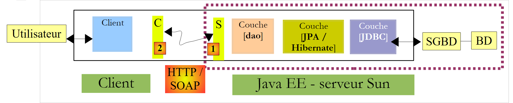 |
Nous nous intéressons dans cette partie à la construction du service web J2EE [1] exécuté sur un serveur Sun / Glassfish.
4.1. La base de données
La base de données qu'on appellera [dbrdvmedecins] est une base de données MySQL5 avec quatre tables :

4.1.1. La table [MEDECINS]
Elle contient des informations sur les médecins gérés par l'application [RdvMedecins].
 |  |
- ID : n° identifiant le médecin - clé primaire de la table
- VERSION : n° identifiant la version de la ligne dans la table. Ce nombre est incrémenté de 1 à chaque fois qu'une modification est apportée à la ligne.
- NOM : le nom du médecin
- PRENOM : son prénom
- TITRE : son titre (Melle, Mme, Mr)
4.1.2. La table [CLIENTS]
Les clients des différents médecins sont enregistrés dans la table [CLIENTS] :
 |  |
- ID : n° identifiant le client - clé primaire de la table
- VERSION : n° identifiant la version de la ligne dans la table. Ce nombre est incrémenté de 1 à chaque fois qu'une modification est apportée à la ligne.
- NOM : le nom du client
- PRENOM : son prénom
- TITRE : son titre (Melle, Mme, Mr)
4.1.3. La table [CRENEAUX]
Elle liste les créneaux horaires où les RV sont possibles :
 |
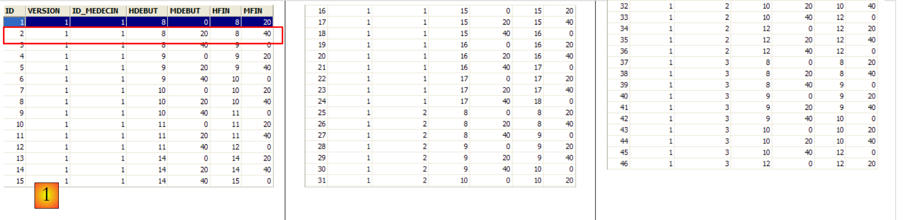 |
- ID : n° identifiant le créneau horaire - clé primaire de la table (ligne 8)
- VERSION : n° identifiant la version de la ligne dans la table. Ce nombre est incrémenté de 1 à chaque fois qu'une modification est apportée à la ligne.
- ID_MEDECIN : n° identifiant le médecin auquel appartient ce créneau – clé étrangère sur la colonne MEDECINS(ID).
- HDEBUT : heure début créneau
- MDEBUT : minutes début créneau
- HFIN : heure fin créneau
- MFIN : minutes fin créneau
La seconde ligne de la table [CRENEAUX] (cf [1] ci-dessus) indique, par exemple, que le créneau n° 2 commence à 8 h 20 et se termine à 8 h 40 et appartient au médecin n° 1 (Mme Marie PELISSIER).
4.1.4. La table [RV]
Elle liste les RV pris pour chaque médecin :
 |
- ID : n° identifiant le RV de façon unique – clé primaire
- JOUR : jour du RV
- ID_CRENEAU : créneau horaire du RV - clé étrangère sur le champ [ID] de la table [CRENEAUX] – fixe à la fois le créneau horaire et le médecin concerné.
- ID_CLIENT : n° du client pour qui est faite la réservation – clé étrangère sur le champ [ID] de la table [CLIENTS]
Cette table a une contrainte d'unicité sur les valeurs des colonnes jointes (JOUR, ID_CRENEAU) :
Si une ligne de la table[RV] a la valeur (JOUR1, ID_CRENEAU1) pour les colonnes (JOUR, ID_CRENEAU), cette valeur ne peut se retrouver nulle part ailleurs. Sinon, cela signifierait que deux RV ont été pris au même moment pour le même médecin. D'un point de vue programmation Java, le pilote JDBC de la base lance une SQLException lorsque ce cas se produit.
La ligne d'id égal à 3 (cf [1] ci-dessus) signifie qu'un RV a été pris pour le créneau n° 20 et le client n° 4 le 23/08/2006. La table [CRENEAUX] nous apprend que le créneau n° 20 correspond au créneau horaire 16 h 20 - 16 h 40 et appartient au médecin n° 1 (Mme Marie PELISSIER). La table [CLIENTS] nous apprend que le client n° 4 est Melle Brigitte BISTROU.
4.2. Génération de la base de données
Créez la base de données MySql [dbrdvmedecins] avec l'outil de votre choix. Pour créer les tables et les remplir on pourra utiliser le script [createbd.sql] qui vous sera fourni. Son contenu est le suivant :
4.3. Les éléments de l'architecture côté serveur
Revenons à l'architecture de l'application à construire :
 |
Côté serveur, l'application sera formée :
- d'une couche Jpa permettant de travailler avec la BD au moyen d'objets
- d'un Ejb chargé de gérer les opérations avec la couche Jpa
- d'un service web chargé d'exposer à des clients distants, l'interface de l'Ejb sous la forme d'un service web.
Les éléments (b) et (c) impémentent la couche [dao] représentée sur le schéma précédent. On sait qu'une application peut accéder à un Ejb distant via les protocoles RMI et JNDI. Dans la pratique, cela limite les clients à des clients Java. Un service web utilise un protocole de communication standardisé que divers langages implémentent : .NET, Php, C++, ... C'est ce que nous voulons montrer ici en utilisant un client .NET.
Pour une courte introduction aux services web, on pourra lire le cours [ref1], paragraphe 14, page 109.
Un service web peut être implémenté de deux façons :
- par une classe annotée @WebService qui s'exécute dans un conteneur web
 |
- par un Ejb annoté @WebService qui s'exécute dans un conteneur Ejb
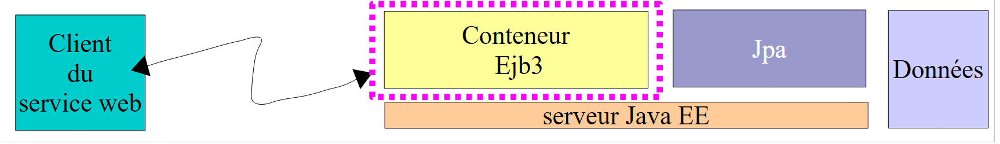 |
 |
Nous allons utiliser ici la première solution :
Dans le cours [ref1], paragraphe 14, page 109, on trouvera un exemple utilisant la seconde solution.
4.4. Configuration Hibernate du serveur Glassfish
Selon sa version, le serveur Glassfish V2 livré avec Netbeans peut ne pas avoir les bibliothèques Hibernate dont la couche Jpa / Hibernate a besoin. Si dans la suite du tutoriel, vous découvrez que Glassfish ne vous propose pas d'implémentation Jpa / Hibernate ou qu'au déploiement des services, une exception indique que les bibliothèques d'Hibernate ne sont pas trouvées, vous devez rajouter les bibliothèques dans le dossier [<glassfish>/domains/domain1/lib/ext] puis redémarrer le serveur Glassfish :
 |
|
Les bibliothèques d'Hibernate sont dans le zip qui accompagne le tutoriel.
4.5. Les outils de génération automatique de Netbeans
Revenons à l'architecture que nous devons construire :
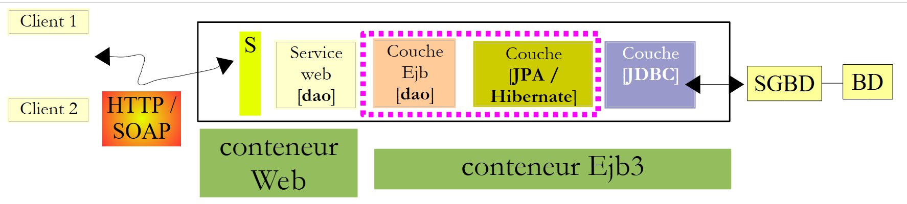 |
Avec Netbeans, il est possible de générer automatiquement la couche [JPA] et la couche [Ejb] qui contrôle l'accès aux entités JPA générées. Il est intéressant de connaître ces méthodes de génération automatique car le code généré donne de précieuses indications sur la façon d'écrire des entités JPA ou le code Ejb qui les utilise.
Nous décrivons maintenant certains de ces outils de génération automatique. Pour comprendre le code généré, il faut avoir de bonnes notions sur les entités JPA [ref1] et les EJB [ref2].
Création d'une connexion Netbeans à la base de données
- lancer le SGBD MySQL 5 afin que la BD soit disponible
- créer une connexion Netbeans sur la base [dbrdvmedecins]
 |
- dans l'onglet [Files], dans la branche [Databases] [1], sélectionner le pilote Jdbc MySQL [2]
- puis sélectionner l'option [3] "Connect Using" permettant de créer une connexion avec une base MySQL
- en [4], donner les informations qui vous sont demandées
- puis valider en [5]
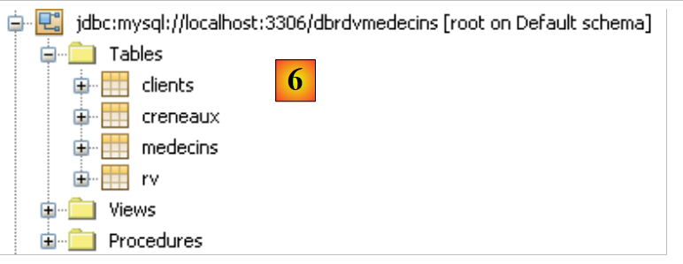 |
- en [6], la connexion est créée. On y voit les quatre tables de la base de données connectée.
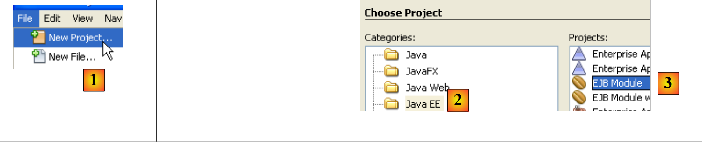 |
- en [1], créer une nouvelle application, un module Ejb
- en [2], choisir la catégorie [Java EE] et en [3] le type [EJB Module]
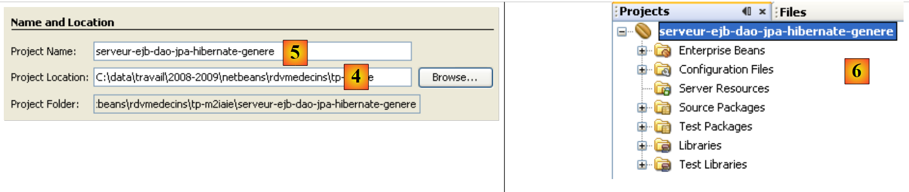 |
- en [4] choisir un dossier pour le projet et en [5] lui donner un nom - puis terminer l'assistant
- en [6] le projet généré
Ajout d'une ressource JDBC au serveur Glassfish
Nous allons ajouter une ressource JDBC au serveur Glassfish.
 |
 |
- dans l'onglet [Services], lancer le serveur Glassfish [2, 3]
- dans l'onglet [Projects], cliquer droit sur le projet Ejb et en [5] sélectionner l'option [New / Other] permettant d'ajouter un élément au projet.

- en [6], sélectionner la catégorie [Glassfish] et en [7] indiquer qu'on veut créer une ressource JDBC en sélectionnant le type [JDBC Resource]
- en [8], indiquer que cette ressource JDBC va utiliser son propre pool de connexions
- en [9], donner un nom à la ressource JDBC
- en [10], passer à l'étape suivante
 |
- en [11], on définit les caractéristiques du pool de connexions de la ressource JDBC
- en [12], donner un nom au pool de connexions
- en [13], choisir la connexion Netbeans [dbrdvmedecins] créée précédemment
- en [14], passer à l'étape suivante
- en [15], il n'y a normalement rien à changer dans cette page. Les propriétés de la connexion à la base MySQL [dbrdvmedecins] ont été tirées de celles de la connexion Netbeans [dbrdvmedecins] créée précédemment
- en [16], passer à l'étape suivante
 |
- en [17], garder les valeurs par défaut proposées
- en [18], terminer l'assistant. Celui crée le fichier [sun-resources.xml] [19] dont le contenu est le suivant :
Le fichier ci-dessus reprend toutes les informations saisies dans l'assistant sous un format XML. Il sera utilisé par l'IDE Netbeans pour demander au serveur Glassfish de créer la ressource "jdbc/dbrdvmedecins" définie ligne 4.
Création d'une unité de persistance
L'unité de persistance [persistence.xml] configure la couche JPA : elle indique l'implémentation JPA utilisée (Toplink, Hibernate, ...) et configure celle-ci.
 |
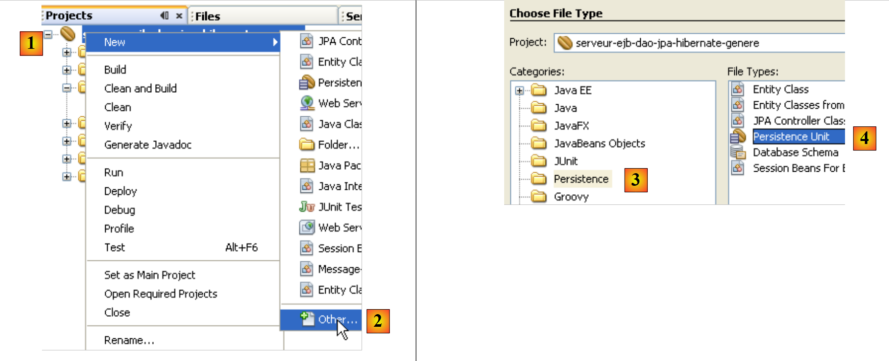 |
- en [1], cliquer droit sur le projet Ejb et sélectionner [New / Other] en [2]
- en [3], sélectionner la catégorie [Persistence] puis en [4], indiquer que vous voulez créer une unité de persistance JPA
 |
- en [5], donner un nom à l'unité de persistance créée
- en [6], choisir [Hibernate] comme implémentation JPA
- en [7], sélectionner la ressource Glassfish "jdbc/dbrdvmedecins" qui vient d'être créée
- en [8], indiquer qu'aucune action ne doit être faite sur la base, lors de l'instanciation de la couche JPA
- terminer l'assistant
- en [9], le fichier [persistence.xml] créé par l'assistant
Son contenu est le suivant :
De nouveau, il reprend dans un format XML les informations données dans l'assistant. Ce fichier est insuffisant pour travailler avec la base MySQL5 "dbrdvmedecins". Il nous faudrait indiquer à Hibernate le type de SGBD à gérer. Ce sera fait ultérieurement.
 |
 |
 |
- en [1], cliquer droit sur le projet et en [2] choisir l'option [New / Other]
- en [3], sélectionner la catégorie [Persistence] puis en [4], indiquer que vous voulez créer des entités JPA à partir d'une base de données existante.
 |
- en [5], sélectionner la source JDBC "jdbc/dbrdvmedecins" que nous avons créée
- en [6], les quatre tables de la base de données associée
- en [7,8], les inclure toutes dans la génération des entités JPA
- en [9], poursuivre l'assistant
 |
- en [10], les entités JPA qui vont être générées
- en [11], donner un nom au package des entités JPA
- en [12], choisir le type Java qui va encapsuler les listes d'objets rendus par la couche JPA
- terminer l'assistant
- en [13], les quatre entités JPA générées, une pour chaque table de la base de données.
Voici par exemple le code de l'entité [Rv] qui représente une ligne de la table [rv] de la base [dbrdvmedecins].
Création de la couche Ejb d'accès aux entités JPA
 |
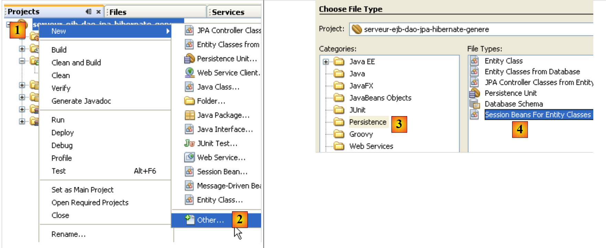 |
- en [1], cliquer droit sur le projet et en [2], sélectionner l'option [New / Other]
- en [3], sélectionner la catégorie [Persistence] puis en [4] le type [Session Beans for Entity Classes]
 |
- en [5], les entités JPA créées précédemment sont présentées
- en [6], les sélectionner toutes
- en [7], elles ont été sélectionnées
- en [8], poursuivre l'assistant
 |
- en [9], donner un nom au package des ejb qui vont être générés
- en [10], indiquer que les Ejb doivent implémenter à la fois une interface locale et distante
- terminer l'assistant
- en [11], les Ejb générés
Voici par exemple, le code de l'Ejb qui gère l'accès à l'entité [Rv], donc à la table [rv] de la base de données [dbrdvmedecins] :
Comme il a été dit, la génération automatique de code peut être très utile pour démarrer un projet et se former sur les entités JPA et les EJB. Dans la suite, nous réécrivons les couches JPA et EJB avec notre propre code mais le lecteur y retrouvera des informations que nous venons de voir dans la génération automatique des couches.
4.6. Le projet Netbeans du module Ejb
Nous créons un nouveau module Ejb vierge ( cf paragraphe 4.5) :
 |
- le package [rdvmedecins.entites] regroupe les entités de la couche Jpa
- le package [rdvmedecins.dao] implémente l'Ejb de la couche [dao]
- le package [rdvmedecins.exceptions] implémente une classe d'exception spécifique à l'application
Dans la suite, nous supposons que le lecteur a suivi toutes les étapes du paragraphe 4.5. Il devra en répéter certaines.
4.6.1. Configuration de la couche JPA
Rappelons l'architecture de notre application client / serveur :
 |
Le projet Netbeans :
 |
La couche [JPA] est configurée par les fichiers [persistence.xml] et [sun-resources.xml] ci-dessus. Ces deux fichiers sont générés par des assistants déjà rencontrés :
- la génération du fichier [sun-resources.xml] a été décrite au pararaphe 4.5.
- la génération du fichier [persistence.xml] a été décrite au pararaphe 4.5.
Le fichier [persistence.xml] généré doit être modifié de la façon suivante :
- ligne 3 : le type de transactions est JTA : les transactions seront gérées par le conteneur Ejb3 de Glassfish
- ligne 4 : une implémentation Jpa / Hibernate est utilisée. Pour cela, la bibliothèque Hibernate a été ajoutée au serveur Glassfish (cf paragraphe 4.4).
- ligne 5 : la source de données JTA utilisée par la couche Jpa a le nom JNDI « jdbc/dbrdvmedecins ».
- ligne 8 : cette ligne n'est pas générée automatiquement. Elle doit être ajoutée à la main. Elle indique à Hibernate, que le SGBD utilisé est MySQL5.
La source de données "jdbc/dbrdvmedecins" est configurée dans le fichier [sun-resources.xml] suivant :
- lignes 8-10 : les caractéristiques Jdbc de la source de données (Url de la base, nom et mot de passe de l'utilisateur). La base de données MySQL dbrdvmedecins est celle décrite au paragraphe 4.1.
- ligne 7 : les caractéristiques du pool de connexions associé à cette source de données
4.6.2. Les entités de la couche JPA
Rappelons l'architecture de notre application client / serveur :
 |
Le projet Netbeans :
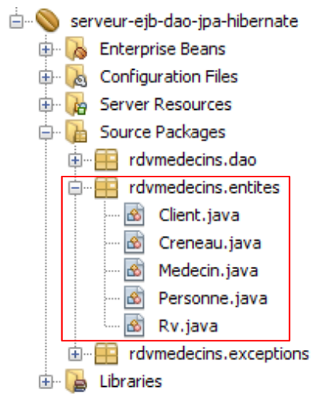 |
Le package [rdvmedecins.entites] implémente la couche [Jpa].
Nous avons vu au paragraphe 4.5, comment générer automatiquement les entités Jpa d'une application. Nous n'utiliserons pas ici cette technique mais définirons nous-mêmes les entités. Celles-ci reprendront cependant une bonne partie du code généré au paragraphe 4.5. Ici, nous souhaitons que les entités [Medecin] et [Client] soient des classes filles d'une classe [Personne].
La classe Personne est utilisée pour représenter les médecins et les clients :
- ligne 3 : on notera que la classe [Personne] n'est pas elle-même une entité (@Entity). Elle va être la classe parent d'entités. L'annotation @MappedSuperClass désigne cette situation.
L'entité [Client] encapsule les lignes de la table [clients]. Elle dérive de la classe [Personne] précédente :
- ligne 3 : la classe [Client] est une entité Jpa
- ligne 4 : elle est associée à la table [clients]
- ligne 5 : elle dérive de la classe [Personne]
L'entité [Medecin] qui encapsule les lignes de la table [medecins] suit le même modèle :
L'entité [Creneau] encapsule les lignes de la table [creneaux] :
- les lignes 15-17 modélisent la relation "un à plusieurs" qui existe entre la table [creneaux] et la table [medecins] de la base de données.
L'entité [Rv] encapsule les lignes de la table [rv] :
- les lignes 15-17 modélisent la relation "un à plusieurs" qui existe entre la table [rv] et la table [clients] de la base de données et les lignes 18-20 la relation "un à plusieurs" qui existe entre la table [rv] et la table [creneaux]
4.6.3. La classe d'exception
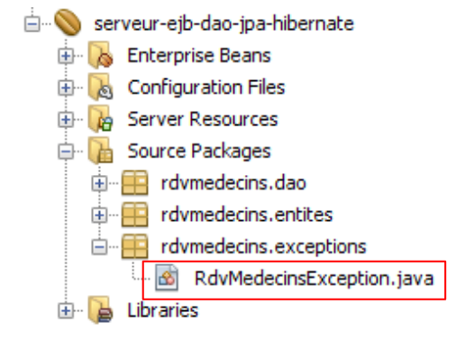 |
La classe d'exception [RdvMedecinsException] de l'application est la suivante :
- ligne 6 : la classe dérive de la classe [RuntimeException]. Le compilateur ne force donc pas à la gérer avec des try / catch.
- ligne 5 : l'annotation @ApplicationException fait que l'exception ne sera pas "avalée" par une exception de type [EjbException].
Pour comprendre l'annotation @ApplicationException revenons à l'architecture utilisée côté serveur :
 |
L'exception de type [RdvMedecinsException] sera lancée par les méthodes de l'Ejb de la couche [dao] à l'intérieur du conteneur Ejb3 et interceptée par celui-ci. Sans l'annotation @ApplicationException le conteneur Ejb3 encapsule l'exception survenue, dans une exception de type [EjbException] et relance celle-ci. On peut ne pas vouloir de cette encapsulation et laisser sortir du conteneur Ejb3 une exception de type [RdvMedecinsException]. C'est ce que permet l'annotation @ApplicationException. Par ailleurs, l'attribut (rollback=true) de cette annotation indique au conteneur Ejb3 que si l'exception de type [RdvMedecinsException] se produit à l'intérieur d'une méthode exécutée au sein d'une transaction avec un SGBD, celle-ci doit être annulée. En termes techniques, cela s'appelle faire un rollback de la transaction.
4.6.4. L'Ejb de la couche [dao]
 |
 |
L'interface java [IDao] de la couche [dao] est la suivante :
L'interface locale [IDaoLocal] de l'Ejb se contente de dériver l'interface [IDao] précédente :
Il en est de même pour l'interface distante [IDaoRemote] :
L'Ejb [DaoJpa] implémente les deux interfaces, locale et distante :
- la ligne 3 indique que l'Ejb distant porte le nom "rdvmedecins.dao"
- la ligne 4 indique que toutes les méthodes de l'Ejb se déroulent au sein d'une transaction gérée par le conteneur Ejb3.
- la ligne 5 montre que l'Ejb implémente les interfaces locale et distante.
Le code complet de l'Ejb est le suivant :
1 2 3 4 5 6 7 8 9 10 11 12 13 14 15 16 17 18 19 20 21 22 23 24 25 26 27 28 29 30 31 32 33 34 35 36 37 38 39 40 41 42 43 44 45 46 47 48 49 50 51 52 53 54 55 56 57 58 59 60 61 62 63 64 65 66 67 68 69 70 71 72 73 74 75 76 77 78 79 80 81 82 83 84 85 86 87 88 89 90 91 92 93 94 95 96 97 98 99 100 101 102 103 104 105 106 107 108 | |
- ligne 8 : l'objet EntityManager qui gère l'accès au contexte de persistance. A l'instanciation de la classe, ce champ sera initialisé par le conteneur Ejb grâce à l'annotation @PersistenceContext de la ligne 7.
- ligne 15 : requête JPQL qui retourne toutes les lignes de la table [clients] sous la forme d'une liste d'objets [Client].
- ligne 22 : requête analogue pour les médecins
- ligne 32 : une requête JPQL réalisant une jointure entre les tables [creneaux] et [medecins]. Elle est paramétrée par l'id du médecin.
- ligne 43 : une requête JPQL réalisant une jointure entre les tables [rv], [creneaux] et [medecins] et ayant deux paramètres : l'id du médecin et le jour du Rv.
- lignes 55-57 : création d'un Rv puis persistance de celui-ci en base de données.
- ligne 67 : suppression d'un Rv en base de données.
- ligne 76 : réalise un select sur la base de données pour trouver un client donné
- ligne 85 : idem pour un médecin
- ligne 94 : idem pour un Rv
- ligne 103 : idem pour un créneau horaire
- toutes les opérations avec le contexte de persistance em de la ligne 9 sont susceptibles de rencontrer un problème avec la base de données. Aussi sont-elles toutes entourées par un try / catch. L'éventuelle exception est encapsulée dans l'exception "maison" RdvMedecinsException.
Le module Ejb une fois compilé donne naissance à un fichier .jar :
 |
4.7. Déploiement de l'Ejb de la couche [dao] avec Netbeans
Netbeans permet de déployer de façon simple sur le serveur Glassfish l'Ejb créé précédemment.
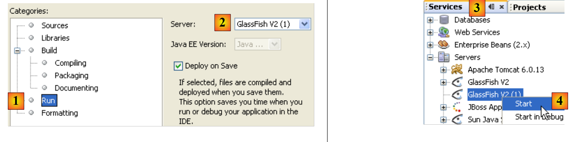 |
- dans les propriétés du projet Ejb, vérifier les options d'exécution [1].
- en [2], le nom du serveur sur lequel va être déployé l'Ejb
- dans l'onglet [Services] [3], on le lance [4].
 |
- en [5], le serveur Glassfish une fois lancé. Il n'a pas encore de module Ejb.
- lancez le serveur MySQL et assurez-vous que la base [dbrdvmedecins] est en ligne. Pour cela, vous pouvez utiliser la connexion Netbeans créée au paragraphe 4.5.
- dans l'onglet [Projects] [6], on déploie le module Ejb [7] : il faut que le SGBD MySQL5 soit lancé pour que la ressource JDBC "jdbc/dbrdvmedecins" utilisée par l'Ejb soit accessible.
- en [8], l'Ejb déployé apparaît dans l'arborescence du serveur Glassfish
 |
- en [9], on enlève l'Ejb déployé
- en [10], l'Ejb n'apparaît plus dans l'arborescence du serveur Glassfish.
4.8. Déploiement de l'Ejb de la couche [dao] avec Glassfish
Nous montrons ici comment déployer sur le serveur Glassfish un Ejb à partir de son archive .jar.
- lancez le serveur MySQL et assurez-vous que la base [dbrdvmedecins] est en ligne. Pour cela, vous pouvez utiliser la connexion Netbeans créée au paragraphe 4.5.
Rappelons la configuration Jpa du module Ejb qui va être déployé. Cette configuration est faite dans le fichier [persistence.xml] :
La ligne 5 indique que la couche Jpa utilise une source de données JTA, c.a.d. gérée par le conteneur Ejb3, nommée "jdbc/dbrdvmedecins".
Nous avons vu au paragraphe 4.5, comment créer cette ressource JDBC à partir de Netbeans. Nous montrons ici comment le faire directement avec Glassfish. Nous suivons ici une procédure décrite au paragraphe 13.1.2, page 79 de [ref1].
Nous commençons par supprimer la ressource afin de pouvoir la recréer. Nous le faisons à partir de Netbeans :
 |
- en [1], les ressources JDBC du serveur Glassfish
- en [2], la ressource "jdbc/dbrdvmedecins" de notre Ejb
- en [3], le pool de connexions de cette ressource JDBC
 |
- en [4], on supprime le pool de connexion. Cela va avoir pour effet de supprimer toutes les ressources JDBC qui l'utilisent, donc la ressource "jdbc/dbrdvmedecins".
- en [5] et [6], la ressource JDBC et le pool de connexions ont été détruits.
Maintenant, nous utilisons la console d'administration du serveur Glassfish pour créer la ressource JDBC et déployer l'Ejb.
 |
- dans l'onglet [services] [1] de Netbeans, lancez le serveur Glassfish [2] puis accédez [3] à sa console d'administration
- en [4], connectez-vous comme administrateur (mot de passe : adminadmin si vous n'avez pas changé celui-ci lors de l'installation ou après).
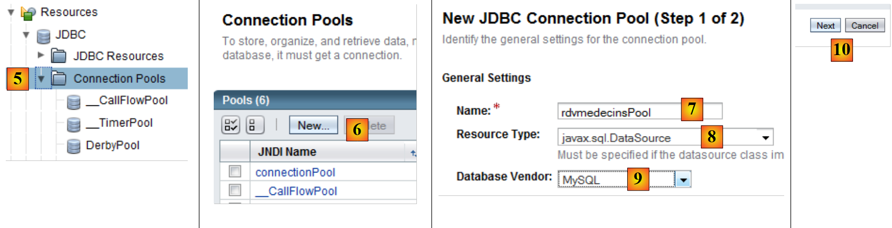 |
- en [5], sélectionnez la branche [Connection Pools] des ressources de Glassfish
- en [6], créez un nouveau pool de connexions. On rappelle qu'un pool de connexions est une technique pour limiter le nombre d'ouvertures / fermetures de connexions avec un SGBD. Au démarrage du serveur, N, un nombre défini par configuration, connexions sont ouvertes avec le SGBD. Ces connexions ouvertes sont ensuites mises à disposition des Ejb qui les sollicitent pour faire une opération avec le SGBD. Dès que celle-ci est terminée, l'Ejb rend la connexion au pool. La connexion n'est jamais fermée. Elle est partagée entre les différents threads qui accèdent au SGBD
- en [7], donnez un nom au pool
- en [8], la classe modélisant la source de données est la classe [javax.sql.DataSource]
- en [9], le SGBD qui détient la source de données est ici MySQl.
- en [10], passez à l'étape suivante
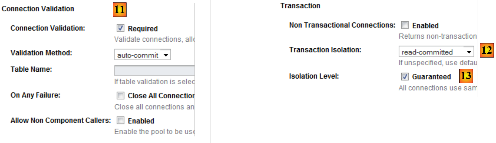 |
- en [11], l'attribut "Connection Validation Required" fait qu'avant de donner une connexion, le pool vérifie qu'elle est opérationnelle. Si ce n'est pas le cas, il en crée une nouvelle. Ceci permet à une application de continuer à fonctionner après une coupure momentanée avec le SGBD. Pendant la coupure, aucune connexion n'est utilisable et des exceptions sont remontées au client. Lorsque la coupure est terminée, les clients qui continuent à demander des connexions les obtiennent de nouveau : grâce à l'attribut "Connection Validation Required" toutes les connexions du pool vont être recréées. Sans cet attribut, le pool constaterait que les connexions initiales ont été coupées mais ne chercherait pas à en recréer de nouvelles.
- en [12], on demande le niveau d'isolement "Read Committed" pour les transactions. Ce niveau assure que une transaction T2 ne peut lire des données modifiées par une transaction T1 tant que cette dernière n'est pas totalement terminée.
- en [13], on demande à ce que toutes les transactions utilisent le niveau d'isolement précisé en [12]
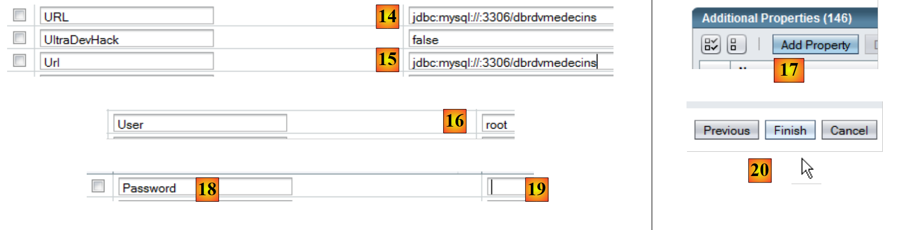 |
- en [14] et [15], précisez l'Url de la BD dont le pool gère les connexions
- en [16], l'utilisateur sera root
- en [17], ajoutez une propriété
- en [18], ajoutez la propriété "Password" avec la valeur () en [19]. Bien que la copie d'écran [19] ne le montre pas, il ne faut pas mettre la chaîne vide mais bien () (parenthèse ouvrante, parenthèse fermante) pour désigner un mot de passe vide. Si l'utilisateur root de votre SGBD MySQL a un mot de passe non vide, mettez ce mot de passe.
- en [20], terminez l'assistant de création du pool de connexions pour la base MySQL [dbrdvmedecins].
 |
- en [21], le pool a été créé. On clique sur son lien.
- en [22], le boton [Ping] permet de créer une connexion avec la bd [dbrdvmedecins]
- en [23], si tout va bien, un message indique que la connexion a réussi
Une fois le pool de connexions créé, on peut créer une ressource Jdbc :
 |
- en [1], on sélectionne la branche [JDBC Resources] de l'arbre des objets du serveur
- en [2], on crée une nouvelle ressource JDBC
- en [3], on donne un nom à la ressource JDBC. Celui-ci doit correspondre au nom utilisé dans le fichier [persistence.xml] :
- en [4], on précise le pool de connexions que doit utiliser la nouvelle ressource JDBC : celui qu'on vient de créer
- en [5], on termine l'assistant de création
 |
- en [6] la nouvelle ressource JDBC
Maintenant que la ressource JDBC est créée, on peut déployer l'archive jar de l'Ejb :
 |
- en [1], sélectionnez la branche [Enterprise Applications]
- en [2], avec le bouton [Deploy], indiquez que vous voulez déployer une nouvelle application
- en [3], indiquez que l'application est un module Ejb
- en [4], sélectionnez le jar de l'Ejb [serveur-ejb-dao-jpa-hibernate.jar] qui vous aura été donné pour le TP.
- en [5], vous pouvez changer le nom du module Ejb si vous le souhaitez
- en [6], terminez l'assistant de déploiement du module ejb
 |
- en [7], le module Ejb a été déployé. Il peut désormais être utilisé.
4.9. Tests de l'Ejb de la couche [dao]
Maintenant que l'Ejb de la couche [dao] de notre application a été déployé, nous pouvons le tester. Nous le ferons au moyen du client Java suivant :
 |
La classe [MainTestsDaoRemote] [1] est une classe de test JUnit 4. Les bibliothèques en [2] sont constituées d'une part :
- du jar de l'Ejb de la couche [dao] [3] (cf paragraphe 4.6.4).
- des bibliothèques Glassfish [4] nécessaires aux clients distants des Ejb.
La classe de test est la suivante :
- ligne 13 : on notera l'instanciation du proxy de l'Ejb distant. On utilise son nom JNDI "rdvmedecins.dao".
- les méthodes de test utilisent les méthodes exposées par l'Ejb (cf paragraphe 4.6.4).
Si tout va bien, les tests doivent passer :
 |
Maintenant que l'Ejb de la couche [dao] est opérationnel, on peut passer à son exposition publique via un service web.
4.10. Le service web de la couche [dao]
Pour une courte introduction à la notion de service web, on lira le paragraphe 14, page 111 de [ref1].
Revenons à l'architecture du serveur de notre application client / serveur :
 |
Nous nous intéressons ci-dessus au service web de la couche [dao]. Ce service a pour seul rôle de rendre disponible l'interface de l'Ejb de la couche [dao] à des clients multi-plateformes capables de dialoguer avec un service web.
Rappelons qu'il y a deux façons d'implémenter un service web :
- par une classe annotée @WebService qui s'exécute dans un conteneur web
 |
- par un Ejb annoté @WebService qui s'exécute dans un conteneur Ejb
 |
Nous utilisons ici la première solution. Dans l'IDE Netbeans, il nous faut construire un projet d'entreprise avec deux modules :
- le module Ejb qui s'exécutera dans le conteneur Ejb : l'Ejb de la couche [dao].
- le module web qui s'exécutera dans le conteneur web : le service web que nous sommes en train de construire.
Nous allons construire ce projet d'entreprise de deux façons.
4.10.1. Projet Netbeans - Version 1
Nous construisons tout d'abord un projet Netbeans de type "Web Application" :
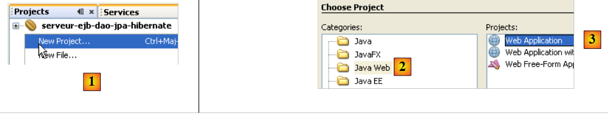 |
- en [1], on crée un nouveau projet dans la catégorie "Java Web" [2] de type "Web Application" [3].
 |
- en [4], on donne un nom au projet et en [5] on précise le dossier dans lequel il doit être généré
- en [6], on fixe le serveur d'application qui va exécuter l'application web
- en [7], on fixe le contexte de l'application
- en [8], on valide la configuration du projet.
 |
- en [9], le projet généré. Le service web que nous construisons va utiliser l'EJB du projet précédent [10]. Aussi a-t-il besoin de référencer le .jar du module Ejb [10].
- en [11], on ajoute un projet Netbeans aux bibliothèques du projet web [12]
 |
- en [13], on sélectionne le dossier du module Ejb dans le système de fichiers et on valide.
 |
- en [14], le module Ejb a été ajouté aux bibliothèques du projet web.
En [15], nous implémentons le service web avec la classe [WsDaoJpa] suivante :
- ligne 4, la classe [WsdaoJpa] implémente l'interface [IDao]. Rappelons que cette interface est définie dans l'archive de l'Ejb de la couche [dao] sous la forme suivante :
- ligne 3 : l'annotation @WebService fait de la classe [WsDaoJpa] un service web.
- lignes 6-7 : la référence de l'Ejb de la couche [dao] sera injectée par le serveur d'application dans le champ de la ligne 7. Rappelons que c'est toujours l'implémentation locale (IDaoLocal ici) qui est ainsi injectée. Cette injection est possible parce que le service web s'exécute dans la même Jvm que l'Ejb.
- toutes les méthodes du service web sont taguées avec l'annotation @WebMethod pour en faire des méthodes visibles aux clients distants. Une méthode non taguée avec l'annotation @WebMethod serait interne au service web et non visible aux clients distants. Chaque méthode M du service web se contente d'appeler la méthode M correspondante de l'Ejb injecté en ligne 7.
La création de ce service web est reflétée par une nouvelle branche dans le projet Netbeans :
 |
On voit en [1] le service web WsDaoJpa et en [2] les méthodes qu'il expose aux clients distants.
Rappelons l'architecture du service web en construction :
 |
Les composantes du service web que nous allons déployer sont :
- [1] : le module web que nous venons de construire
- [2] : le module Ejb que nous avons construit lors d'une étape précédente et dont dépend le service web
Pour les déployer ensemble, il faut rassembler les deux modules dans un projet Netbeans dit "d'entreprise" :
 |
En [1] on crée un nouveau projet d'entreprise [2, 3].
 |
- en [4,5], on donne un nom au projet et on fixe son dossier de création
- en [6], on choisit le serveur d'application sur lequel sera déployée l'application d'entreprise
- en [7], un projet d'entreprise peut avoir trois composantes : application web, module Ejb, application cliente. Ici, le projet est créé sans aucune composante. Celles-ci seront rajoutées ultérieurement.
 |
- en [8], l'application d'entreprise nouvellement créée.
 |
- en [9], cliquer droit sur [Java EE Modules] et ajouter un nouveau module
- en [10], seuls les modules Netbeans actuellement ouverts dans l'IDE sont présentés. Ici nous sélectionnons le module web [serveur-webservice-1-ejb-dao-jpa-hibernate] et le module Ejb [serveur-ejb-dao-jpa-hibernate] que nous avons construits.
- en [11], les deux modules ajoutés au projet d'entreprise.
Il nous reste à déployer cette application d'entreprise sur le serveur Glassfish. Pour la suite, le SGBD MySQL doit être lancé afin que la source de données JDBC "jdbc/dbrdvmedecins" utilisée par le module Ejb soit accessible.
 |
- en [1], on lance le serveur Glassfish
- si le module Ejb [serveur-ejb-dao-jpa-hibernate] est déployé, on le décharge [2]
- en [3], on déploie l'application d'eentreprise
 |
- en [4], elle est déployée. On voit qu'elle contient les deux modules : Web et Ejb.
4.10.2. Projet Netbeans - version 2
Nous montrons maintenant comment déployer le service web lorsqu'on ne dispose pas du code source du module Ejb mais seulement son archive .jar.
Le nouveau projet Netbeans du service web sera le suivant :
 |
Les éléments notables du projet sont les suivants :
- [1] : le service web est implémenté par un projet Netbeans de type [Web Application].
- [2] : le service web est implémenté par la classe [WsDaoJpa] déjà étudiée
- [3] : l'archive de l'Ejb de la couche [dao] qui permet à la classe [WsDaoJpa] d'avoir accès aux définitions des différentes classes, interfaces, entités des couches [dao] et [jpa].
Nous construisons ensuite le projet d'entreprise nécessaire au déploiement du service web :
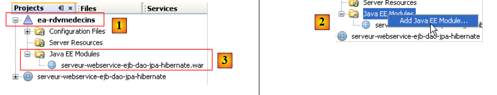 |
- [1], on crée une application d'entreprise [ea-rdvmedecins], au départ sans aucun module.
- en [2], on ajoute le module web [serveur-webservice-ejb-dao-jpa-hibernate] précédent
- en [3], le résultat.
Telle quelle, l'application d'entreprise [ea-rdvmedecins] ne peut pas être déployée sur le serveur Glassfish à partir de Netbeans. On obtient une erreur. Il faut alors déployer à la main l'archive ear de l'application [ea-rdvmedecins] :
 |
- l'archive [ea-rdvmedecins.ear] est trouvée dans le dossier [dist] [2] de l'onglet [Files] de Netbeans.
- dans cette archive [3], on trouve les deux éléments de l'application d'entreprise :
- l'archive de l'Ejb [serveur-ejb-dao-jpa-hibernate]. Cette archive est présente parce qu'elle faisait partie des bibliothèques référencées par le service web.
- l'archive du service web [serveur-webservice- ejb-dao-jpa-hibernate].
- l'archive [ea-rdvmedecins.ear] est construite par un simple Build [4] de l'application d'entreprise.
- en [5], l'opération de déploiement qui échoue.
Pour déployer l'archive [ea-rdvmedecins.ear] de l'application d'entreprise, nous procédons comme il a été montré lors du déploiement de l'archive de l'Ejb [serveur-ejb-dao-jpa-hibernate.jar] au paragraphe 4.2. Nous utilisons de nouveau le client web d'administration du serveur Glassfish. Nous ne répétons pas des étapes déjà décrites.
Tout d'abord, on commencera par "décharger" l'application d'entreprise déployée au paragraphe 4.10.1 :
 |
- [1] : sélectionnez la branche [Enterprise Applications] du serveur Glassfish
- en [2] sélectionner l'application d'entreprise à décharger puis en [3] la décharger
- en [4] l'application d'entreprise a été déchargée
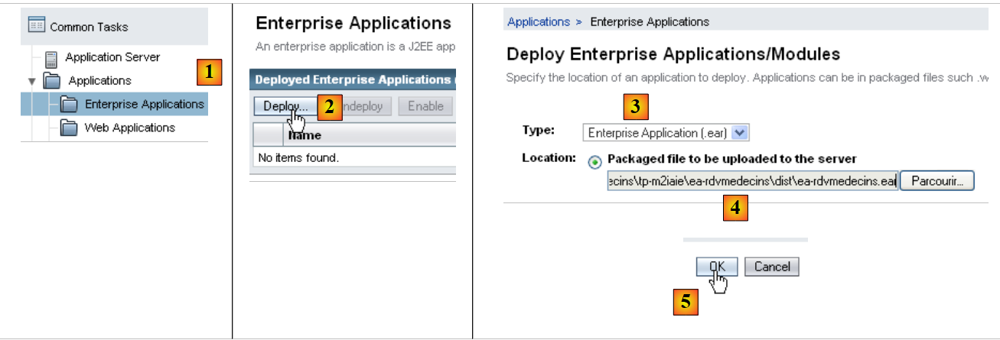 |
- en [1], choisissez la branche [Enterprise Applications] du serveur Glassfish
- en [2], déployez une nouvelle application d'entreprise
- en [3], sélectionnez le type [Enterprise Application]
- en [4], désignez le fichier .ear du projet Netbeans [ea-rdvmedecins]
- en [5], déployez cette archive
 |
- en [6], l'application a été déployée
- en [7], le service web [WsDaoJpa] apparaît dans la branche [Web Services] du serveur Glassfish. On le sélectionne.
- en [8], on a diverses informations sur le service web. La plus intéressante pour un client est l'information [9] : l'uri du service web.
- en [10], on peut tester le service web
 |
- en [11], l'uri du service web à laquelle on a ajouté le paramètre ?tester. Cette uri présente une page de test. Toutes les méthodes (@WebMethod) exposées par le service web sont affichées et peuvent être testées. Ici, on teste la méthode [13] qui demande la liste des clients.
 |
- en [14], nous ne présentons qu'une vue partielle de la page de réponse. Mais on peut voir que la méthode getAllClients a bien renvoyé la liste des clients. La copie d'écran nous montre qu'elle envoie sa réponse dans un format XML.
Un service web est entièrement décrit par un fichier XML appelé fichier WSDL :
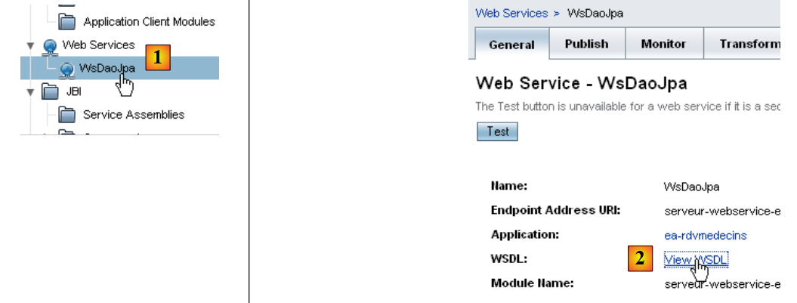 |
- en [1] dans l'outil web d'administration du serveur Glassfish, sélectionnez le service web [WsDaoJpa]
- en [2], suivez le lien [View WSDL]
 |
- en [3] : l'uri du fichier WSDL. C'est une information importante à connaître. Elle est nécessaire pour configurer les clients de ce service web.
- en [4], la description XML du service web. Nous ne commenterons pas ce contenu complexe.
4.10.3. Tests JUnit du service web
Nous créons un projet Netbeans pour "jouer" les tests déjà joués avec un client Ejb avec cette fois-ci un client pour le service web dernièrement déployé. Nous suivons ici une démarche analogue à celle décrite au paragraphe 14.2.1, page 115 de [ref1].
 |
- en [1], un projet Java classique
- en [2], la classe de test
- en [3], le client utilise l'archive de l'Ejb pour avoir accès aux définitions de l'interface de la couche [dao] et des entités Jpa. On rappelle que cette archive est dans le sous-dossier [dist] du dossier du module Ejb.
Pour accéder au service web distant, il est nécessaire de générer des classes proxy :
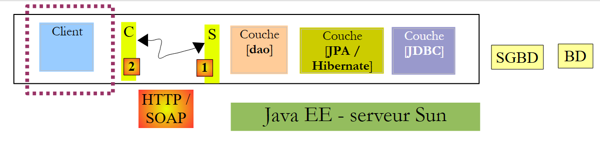 |
Dans le schéma ci-dessus, la couche [2] [C=Client] communique avec la couche [1] [S=Serveur]. Pour dialoguer avec la couche [S], le client [C] est amené à créer une connexion réseau avec la couche [S] et à dialoguer avec elle selon un protocole précis. Les connexions réseau sont des connexions TCP et le protocole de transport est HTTP. La couche [S] qui représente le service web est implémentée par une servlet Java exécutée par le serveur Glassfish. Nous n'avons pas écrit cette servlet. Sa génération est automatisée par Glassfish à partir des annotations @Webservice et @WebMethod de la classe [WsDaoJpa] que nous avons écrite. De même, nous allons automatiser la génération de la couche [C] du client. On appelle parfois la couche [C], une couche proxy du service web distant, le terme proxy désignant un élément intermédiaire dans une chaîne logicielle. Ici, le proxy C est l'intermédiaire entre le client que nous allons écrire et le service web que nous avons déployé.
Avec Netbeans 6.5, le proxy C peut être généré de la façon suivante (pour la suite, il faut que le service web soit actif sur le serveur Glassfish) :
 |
- en [1], ajouter un nouvel élément au projet Java
- en [2], sélectionner la branche [Web services]
- en [3], sélectionner [Web Service Client]
 |
- en [4], fournir l'uri du fichier WSDL du service web. Cette uri a été présentée au paragraphe 4.10.2.
- en [5], laisser la valeur par défaut [JAX-WS]. L'autre valeur possible est [JAX-RPC]
- après avoir validé l'assistant de création du proxy du service web, le projet Netbeans a été enrichi d'une branche [Web Service References] [6]. Cette branche montre les méthodes exposées par le service web distant.
 |
- dans l'onglet [Files] [7], des codes sources Java ont été rajoutés [8]. Ils correspondent au proxy C généré.
- en [9] le code de l'une des classes. On y voit [10] qu'elles ont été placées dans un paquetage [rdvmedecins.ws]. Nous ne commenterons pas le code de ces classes qui est de nouveau assez complexe.
Pour le client Java que nous sommes en train de construire, le proxy C généré sert d'intermédiaire. Pour accéder à la méthode M du service web distant, le client Java appelle la méthode M du proxy C. Le client Java appelle ainsi des méthodes locales (exécutées dans la même Jvm) et de façon transparente pour lui, ces appels locaux sont traduits en appels distants.
Il nous reste à savoir appeler les méthodes M du proxy C. Revenons à notre classe de test JUnit :
 |
En [1], la classe de test [MainTestsDaoRemote] est celle déjà utilisée lors du test de l'Ejb de la couche [dao] :
- ligne [13], le test test1 est conservé à l'identique.
- ligne [9], le contenu de la méthode [init] a été supprimé.
A ce stade, le projet présente des erreurs car la méthode de test [test1] utilise les entités [Client], [Medecin], [Creneau], [Rv] qui ne sont plus dans les mêmes packages qu'auparavant. Elles sont dans le package du proxy C généré. On supprime les instructions import concernées et on les régénère par l'opération Fix Imports.
 |
Revenons au code de la classe de test [MainTestsDaoRemote] :
La méthode [init] de la ligne 10 doit initialiser la référence de la couche [dao] de la ligne 7. Il nous faut savoir comment utiliser le proxy C généré, dans notre code. Netbeans nous aide dans cette démarche.
 |
- sélectionner en [1] la méthode [getAllClients] du service web et avec la souris, puis tirer cette méthode pour aller la déposer au sein de la méthode [init] de la classe de test.
On obtient le résultat [2]. Ce squelette de code nous montre comment utiliser le proxy C généré :
- la ligne [5] nous montre que la méthode [getAllClients] est une méthode de l'objet de type [WsDaoJpa] défini ligne 3. Le type [WsDaoJpa] est une interface présentant les mêmes méthodes que celles exposées par le service web distant.
- ligne [3], l'objet [WsDaoJpa port] est obtenu à partir d'un autre objet de type [WsDaoJpaService] défini ligne 2. Le type [WsDaoJpaService] représente le proxy C généré localement.
- l'accès au service web distant peut échouer, aussi l'ensemble du code est-il entouré d'un try / catch.
- les objets du proxy C sont dans le package [rdvmedecins.ws]
Une fois ce code compris, on voit que la référence locale du service web distant peut être obtenue par le code :
Le code de la classe de test JUnit devient alors le suivant :
Nous sommes désormais prêts pour les tests :
 |
En [1], le test JUnit est exécuté. En [2], il est réussi. Si on regarde les affichages sur la console Netbeans, on trouve des lignes comme les suivantes :
Liste des clients :
rdvmedecins.ws.Client@1982fc1
rdvmedecins.ws.Client@676437
rdvmedecins.ws.Client@1e4853f
rdvmedecins.ws.Client@1e808ca
Côté serveur, l'entité [Client] a une méthode toString qui affiche les différents champs d'un objet de type [Client]. Lors de la génération automatique du proxy C, les entités sont créées dans le proxy C mais avec seulement les champs privés accompagnés de leurs méthodes get / set. Ainsi la méthode toString n'a pas été générée dans l'entité [Client] du proxy C. Ce qui explique l'affichage précédent. Ceci n'enlève rien au test JUnit : il a été réussi. On considèrera désormais qu'on a un service web opérationnel.